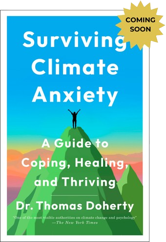

Featured Nonfiction

RAISED BY A SERIAL KILLER: Discovering the Truth About My Father
“A mesmerizing memoir…The details, research, and candor in
this highly recommended work will captivate readers, who won’t
be able to put it down.” —Library Journal, Starred Review
—Library Journal, Starred Review
“Unputdownable…Readers will find themselves utterly
immersed.”
—BookPage, Starred Review
Learn More

MANHATTAN CULT STORY: My Unbelievable True Story of Sex, Crimes, Chaos, and Survival
“A haunting story...[told]not only with vividness and
vulnerability but also with an eye to humanizing the cult
experience and helping survivors of such abuse—and all of us,
really—understand (and forgive) behavior that seems
inexplicable.”
—Amanda Montell, author of Cultish: The Language of Fanaticism
Learn More

RETURN: A Journey Back to Living Wild
Lynx Vilden, a groundbreaking eco-warrior, recounts her
spiritual and physical quest to deeply connect with the earth,
living in the wild using Stone Age technology, returning to
ancient ways to live honestly in the natural world.
“[A] mesmerizing and ethereal autobiography …”
—Booklist
Learn More

SURVIVING CLIMATE ANXIETY: A Guide to Coping, Healing, and Thriving
A revolutionary program to help us flourish in these anxious
times by Thomas Doherty, a globally recognized clinical and
environmental psychologist. The New York Times calls him, “the
most prominent American advocate of a growing discipline known
as ‘ecopsychology.’”
Learn More
Featured Fiction

THE COMFORT OF GHOSTS: A Maisie Dobbs Novel
“An emotional and satisfying conclusion to a long running and
beloved series.”
—Library Journal, Starred Review
“Winspear delivers a most elegant and satisfying resolution .
. . It’s a privilege to experience life with Winspear’s
determined and maximally resilient woman protagonist.”
—Booklist, Starred Review
Learn More

THE WHITE LADY: A Novel
A new stand-alone historical novel covering two World Wars
from the internationally bestselling author of the Maisie
Dobbs series. “A poignant story of courage, misogyny, and
misused power. A tense history-based thriller filled with
anguish and suspense.”
—Kirkus Reviews. Starred Review
Learn More

AMERICAN FEVER: A Novel
“Provocatively undercuts received narratives about the
‘American dream’ from the immigrant’s perspective.”
—The Guardian
“A funny and affecting novel, understated but powerful, a
wonderful new spin on the coming-of-age story.”
—Kirkus Reviews, Starred Review
Learn More

OIL AND MARBLE: A Novel of Leonardo and Michelangelo
“Tremendously entertaining and unapologetic in its artistic
license.”
—The New York Times
Learn More